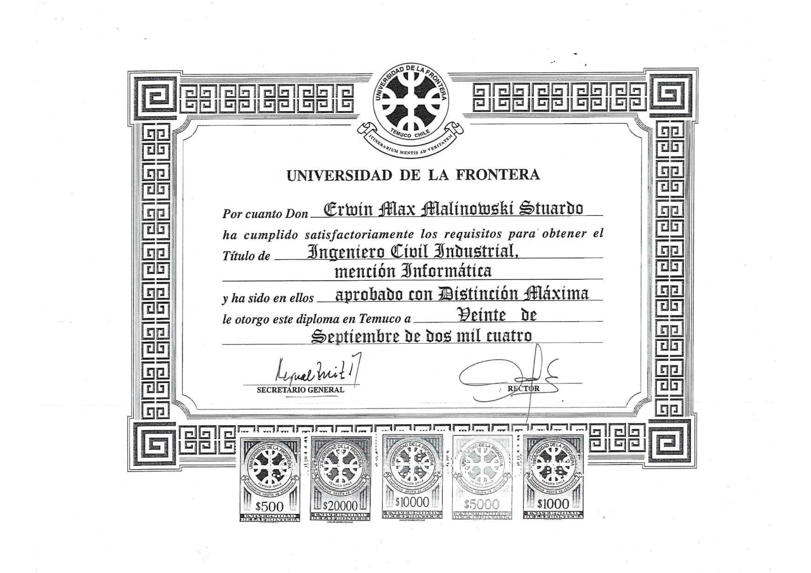
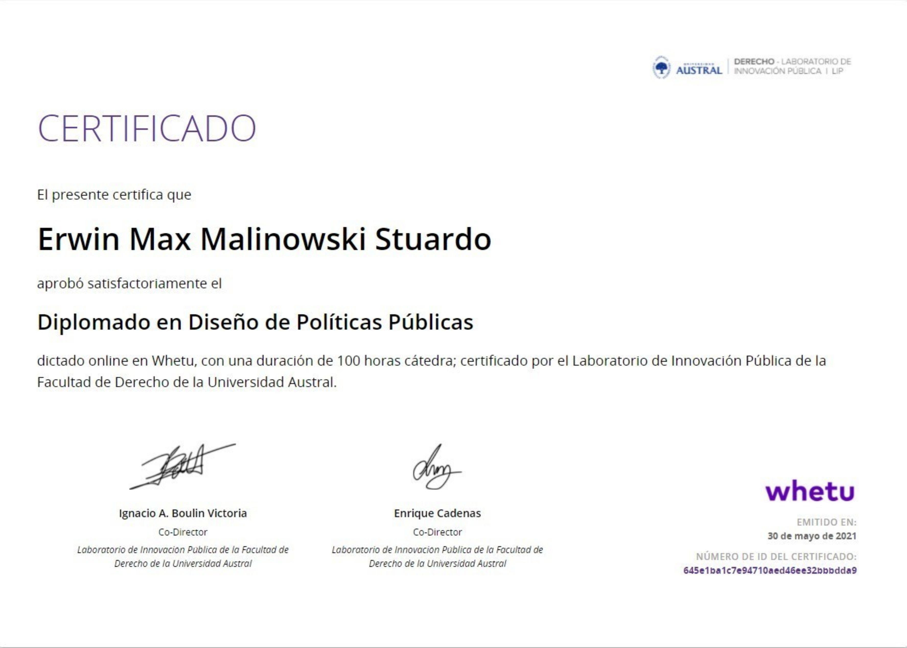
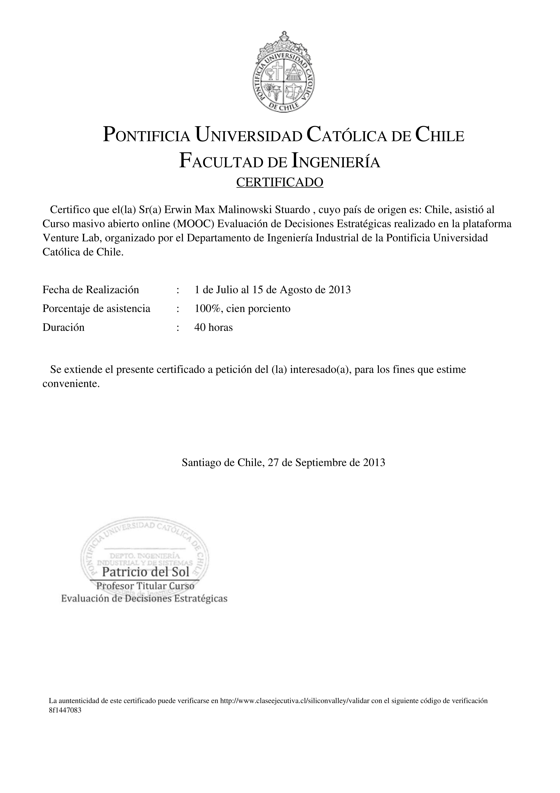
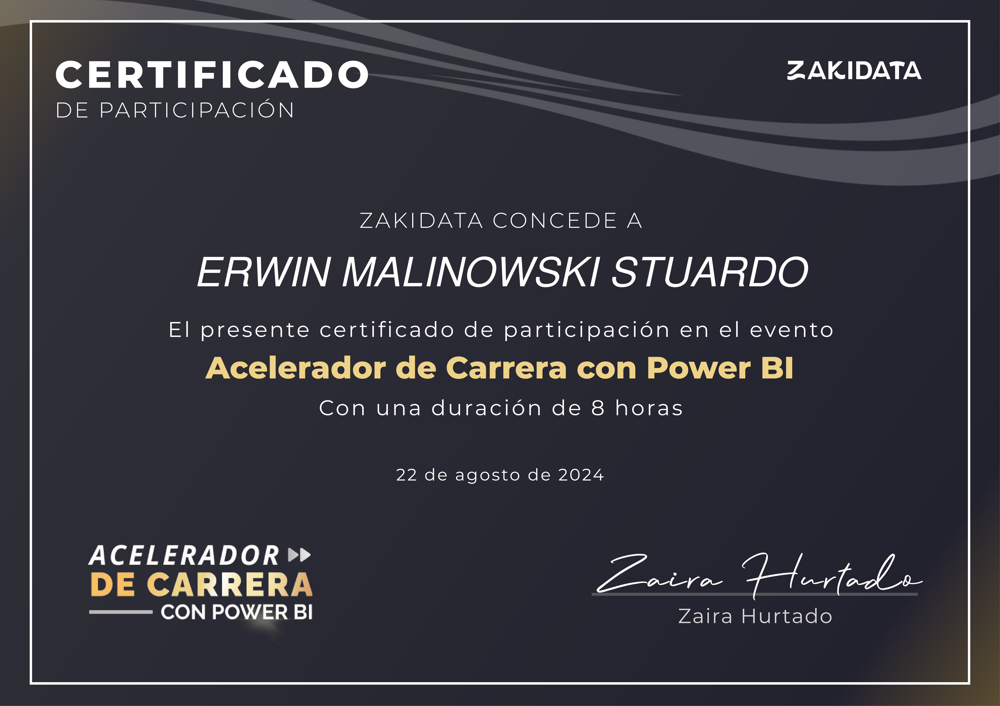
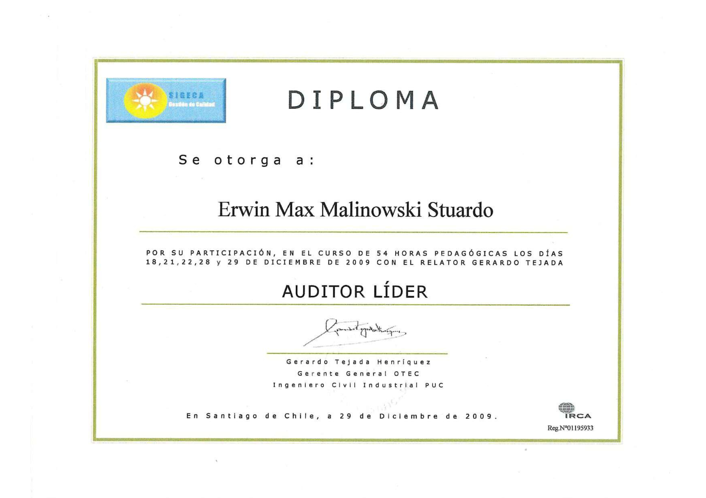

Título Profesional – Ingeniero Civil Industrial

Diplomado en Diseño de Políticas Públicas

Evaluación de Decisiones Estratégicas – PUC

Certificación Power BI

Auditor Líder Normas ISO
Formación Estratégica Complementaria
- Negocios Internacionales – University of New Mexico.
- Diplomado en Diseño de Políticas Públicas (2021).
- Evaluación de Decisiones Estratégicas – Pontificia Universidad Católica de Chile.
- Lean Six Sigma – White Belt.
- Interoperabilidad Gubernamental – Ministerio de Economía.